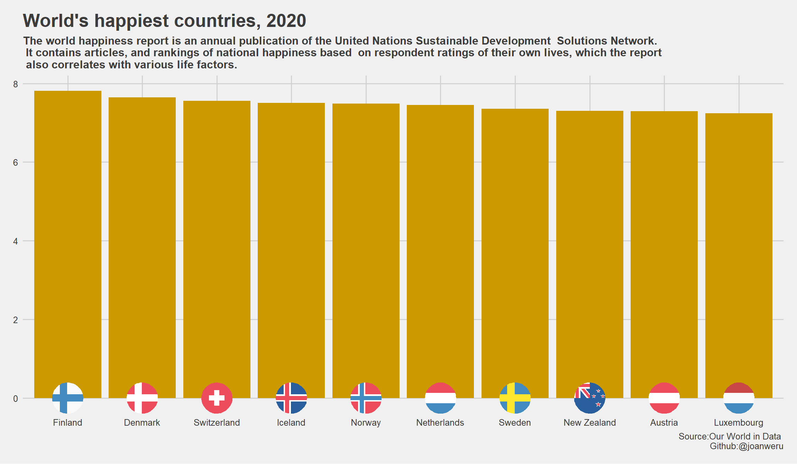
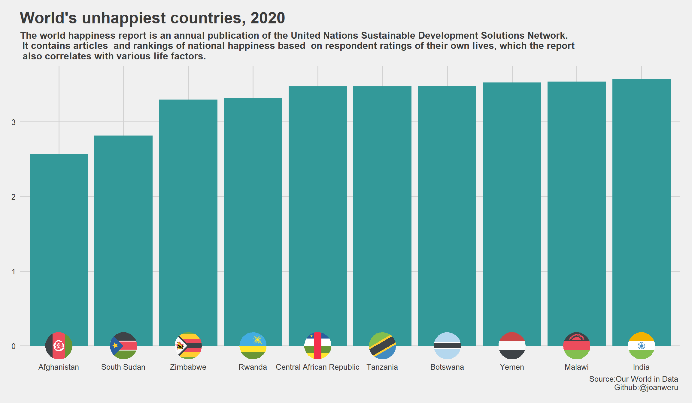

The world happiness report is an annual publication of the United Nations Sustainable Development Solutions Network. It contains articles and rankings of national happiness based on respondent ratings of their own lives, which the report also correlates with various life factors. The happiness rankings are based on individuals own assessments of their lives as revealed by their own answers to the Cantril ladder question that invites survey participants to imagine their current position on a ladder with steps numbered from 0 to 10, where the top represents the best possible and the bottom the worst possible life for themselves.
NB: The happiness rankings are not based on an index of the six variables GDP per capita , social support, health life expectancy, freedom, generosity and perceptions of corruption . The variables however explain the variation of happiness across countries and also show how measures of well being are themselves affected by the six life factors.
Use data visualization to unearth key insights that could help decision makers in improving the quality of life in their countries.
library(tidyverse)
library(ggplot2)
library(countrycode)
library(ggthemes)
library(ggpubr)
library(ggflags)I use geom_point and geom_smooth with method=lm to show the strength and direction of the linear relationship between the happiness score and the various life factors.
I add a region column to check how different regions performed. This will help us unearth any important insights. To do so, I map each country to it’s respective continent using countrycode.
happiness20$region<-countrycode(sourcevar = happiness20[[1]],origin = "country.name",destination = "continent",custom_match = c(Kosovo="Europe"))I had to custom match Kosovo because it wasn’t mapping for some reason
a<-ggplot(happiness20,aes(x=`Logged GDP per capita`,y=`Ladder score`,add="reg.line"))+
geom_point(size=4,aes(colour=region))+theme_fivethirtyeight()+geom_smooth(method = lm)+
labs(title = "GPD per capita")+
theme(axis.title = element_text(face="bold",size = 18),axis.title.x = element_blank(),legend.position = "top")+
ylab("Happiness score\n")+scale_color_viridis_d(direction = -1)+
stat_regline_equation(aes(label=paste(..adj.rr.label..)),geom = "label",position = "identity")
b<-ggplot(happiness20,aes(y=`Ladder score`,x=`Social support`))+
geom_point(size=3,aes(colour=region))+scale_colour_viridis_d(direction = -1)+
theme_fivethirtyeight()+geom_smooth(method=lm)+labs(title = "Social support")+stat_regline_equation(aes(label=paste(..adj.rr.label..)),position = "identity",geom = "label",)
c<-ggplot(happiness20,aes(y=`Ladder score`,x=`Healthy life expectancy`))+
geom_point(size=3,aes(colour=factor(region)))+scale_colour_viridis_d(direction = -1)+
theme_fivethirtyeight()+geom_smooth(method=lm)+labs(title = "Healthy life expectancy")+stat_regline_equation(aes(label=paste(..adj.rr.label..)),geom = "label",position = "identity")
d<-ggplot(happiness20,aes(y=`Ladder score`,x=`Freedom to make life choices`))+
geom_point(size=3,aes(colour=region))+scale_colour_viridis_d(direction = -1)+theme_fivethirtyeight()+
geom_smooth(method=lm)+labs(title="Freedom to make life choices")+
theme(axis.title = element_text(face="bold",size = 18),axis.title.x = element_blank())+
ylab("Happiness score\n")+stat_regline_equation(aes(label=paste(..adj.rr.label..)),position = "identity",geom = "label",)
e<-ggplot(happiness20,aes(y=`Ladder score`,x=Generosity))+geom_point(size=3,aes(colour=region))+
scale_colour_viridis_d(direction = -1)+theme_fivethirtyeight()+geom_smooth(method="lm")+
labs(title="Generosity")+stat_regline_equation(aes(label=paste(..adj.rr.label..)),position = "identity",geom = "label",)
f<-ggplot(happiness20,aes(y=`Ladder score`,x=`Perceptions of corruption`))+
geom_point(size=3,aes(colour=region))+scale_colour_viridis_d(direction = -1)+
theme_fivethirtyeight()+geom_smooth(method=lm)+labs(title="Perceptions of corruption")+stat_regline_equation(aes(label=paste(..adj.rr.label..)),position = "identity",geom = "label",)
g<-ggarrange(a,b,c,d,e,f,ncol=3,nrow=2,common.legend = TRUE,legend = "top")
annotate_figure(g,top=text_grob("Linear relationship between happiness and various life factors ",face ="bold",family="sans",size=25,color ="black" ),bottom=text_grob("The world happiness report is an annual publication of the United Nations Sustainable Development Solutions Network. It contains articles \n and rankings of national happiness based on respondent ratings of their own lives, which the report also correlates with various life factors.\n Source:Our World in Data \n Github:@joanweru",hjust=1,x=1,color = "#3C3C3C",face="bold"))We use geom_flag for to visualize the countries alongside their individual flags
happiness20$iso<-countrycode(sourcevar = happiness20[[1]],origin = "country.name",destination = "iso2c",custom_match = c(Kosovo="Europe"))
happiness20_arranged<-arrange(happiness20,desc(`Ladder score`))
top<-head(happiness20_arranged,10) #countries with highest happiness score
bottom<-tail(happiness20_arranged,10) #countries with lowest happiness score
top%>%mutate(code=tolower(iso))%>%
ggplot(aes(x=reorder(`Country name`,-`Ladder score`),y=`Ladder score`,fill=region))+
geom_col(fill="#CC9900")+theme_fivethirtyeight()+geom_flag(y=0,aes(country=code),size=14)+
labs(title = "World's happiest countries, 2020",subtitle ="The world happiness report is an annual publication of the United Nations Sustainable Development Solutions Network.\n It contains articles, and rankings of national happiness based on respondent ratings of their own lives, which the report \n also correlates with various life factors.",caption = "Source:Our World in Data \n Github:@joanweru")+
theme(plot.title = element_text(size=20),plot.subtitle = element_text(face="bold"))
bottom%>%mutate(code=tolower(iso))%>%
ggplot(aes(x=reorder(`Country name`,`Ladder score`),y=`Ladder score`,fill=region))+
geom_col(fill="#339999")+scale_fill_viridis_d()+theme_fivethirtyeight()+
geom_flag(y=0,aes(country=code),size=14)+
labs(title = "World's unhappiest countries, 2020",subtitle ="The world happiness report is an annual publication of the United Nations Sustainable Development Solutions Network.\n It contains articles and rankings of national happiness based on respondent ratings of their own lives, which the report\n also correlates with various life factors.",caption = "Source:Our World in Data \n Github:@joanweru ")+
theme(plot.title = element_text(size=20),plot.subtitle = element_text(face = "bold"))